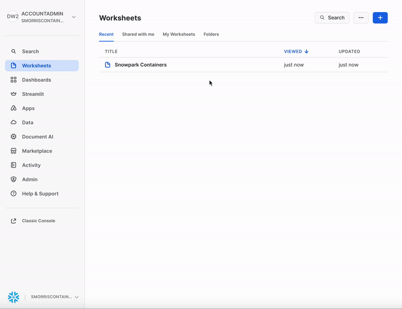

Container Services - CPU Jupyter Notebook Setup:
Video
VIDEO HERE
This tutorial assumes you have nothing in your Snowflake account (Trial) and no complex security needs. The tutorial can be started at any step.
Files
PUT LINK TO TUTORIAL FILES
1. Snowflake - Setup
Let's start by setting up snowflake before we jump to docker. Lets create a worksheet in snowflake and add the code below with your information and hit run:

set role_name = 'container_jupyter';
set user_name = 'container_jupyter';
set user_password = 'Password12';
set warehouse_name = 'jupyter';
set database_name = 'container';
set schema_name = 'jupyter';
set pool_name = 'container_jupyter';
set repo_name = 'image_repo';
set stage_name = 'image_stage';
set service_name = 'jupyter';
use role accountadmin;
-- Create a user for container services:
create user if not exists identifier($user_name)
password = $user_password
default_warehouse = $warehouse_name
must_change_password = false
comment = 'Jupyter notebook in container services.';
-- Create role for container services and grant the role to sysadmin and our user:
create role if not exists identifier($role_name);
grant role identifier($role_name) to role sysadmin;
grant role identifier($role_name) to user identifier($user_name);
-- Set the default role for the user to our role. This is required by container services or it wont work.
alter user identifier($user_name) set default_role = $role_name;
-- Create the compute pool:
create compute pool identifier($pool_name)
min_nodes = 1
max_nodes = 1
instance_family = standard_1
comment='Container compute that will be used for juypter notebooks.';
-- Grant usage and monitor for the compute resourse to our role:
grant usage on compute pool identifier($pool_name) to role identifier($role_name);
grant monitor on compute pool identifier($pool_name) to role identifier($role_name);
-- Create the warehouse. this will be the warehouse used if any snowflake data is queried.
create warehouse if not exists identifier($warehouse_name)
warehouse_size = xsmall
warehouse_type = standard
auto_suspend = 60
auto_resume = true
initially_suspended = true;
-- Grant all warhouse control to our container role.
grant all on warehouse identifier($warehouse_name) to role identifier($role_name);
-- create the database were everything will live and give ownership to our container user.
create database identifier($database_name);
grant ownership on database identifier($database_name) to role identifier($role_name);
-- i don't know what this is for...
create security integration if not exists snowservices_ingress_oauth
type=oauth
oauth_client=snowservices_ingress
enabled=true;
-- Setup context for adding schema, image repository and stage.
use role identifier($role_name);
use database identifier($database_name);
-- Adding schema, image repository and stage.
create schema identifier($schema_name);
use schema identifier($schema_name);
create or replace image repository identifier($repo_name);
create or replace stage identifier($stage_name) directory = ( enable = true ) ENCRYPTION = (type = 'SNOWFLAKE_SSE');
-- Tell us where to upload our docker image to. This will be used later.
show image repositories;
select "repository_url" from table(result_scan(last_query_id()));
2. Docker
Run Locally
Our goal is to run the application locally and check it works and then upload the dockerfile / image to our snowflake image repository so it can be hosted on Snowflake container services.
Please install docker desktop - https://www.docker.com/products/docker-desktop/
Using terminal, **navigate to the folder that has the docker file you downloaded. Build and run the docker file locally. Once built, go to http://localhost:8080/lab to see the application. Ctrl+c to exit the application.
Upload to Snowflake
- Tag the image with your repository_url we got from step 1.
- Log into docker and upload the image. We will use the login name container_jupyter and the password Password12.
- Upload/push your image to snowflake.
3. Snowflake - Upload Service File
Upload the service specification file to the stage. We will use snowflake UI to do this. An example can be seen below.
GIF GOES HERE.
4. Snowflake - Run
Final step, Create the service from the service specification file and go to the URL given.
WAIT for public endpoint to NOT say: Endpoints provisioning in progress... check back in a few minutes. It will give you a url.